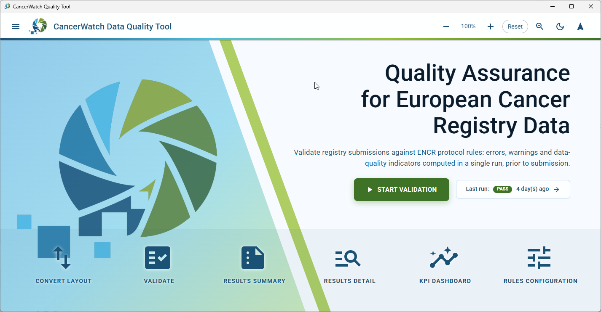
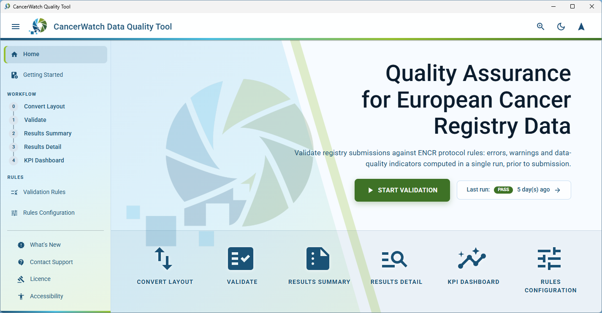
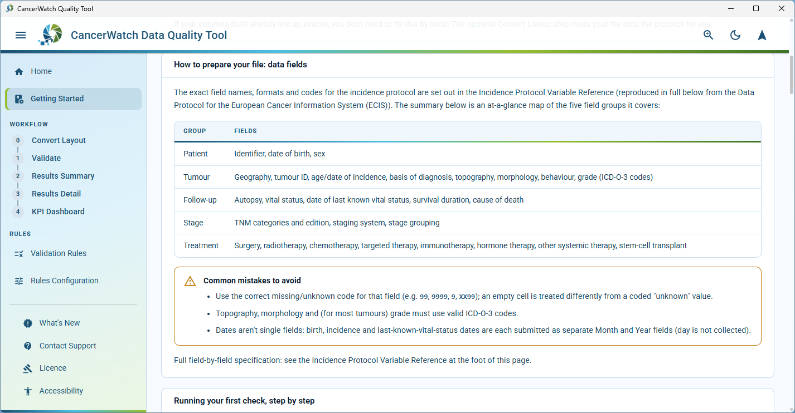
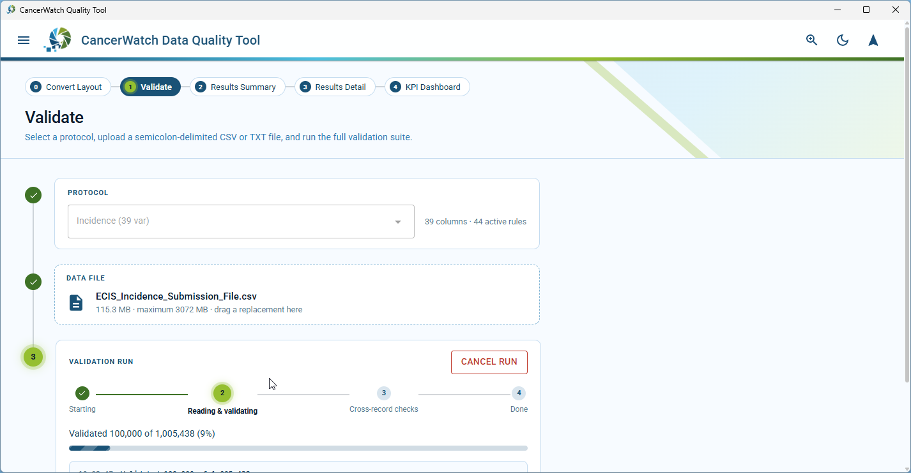
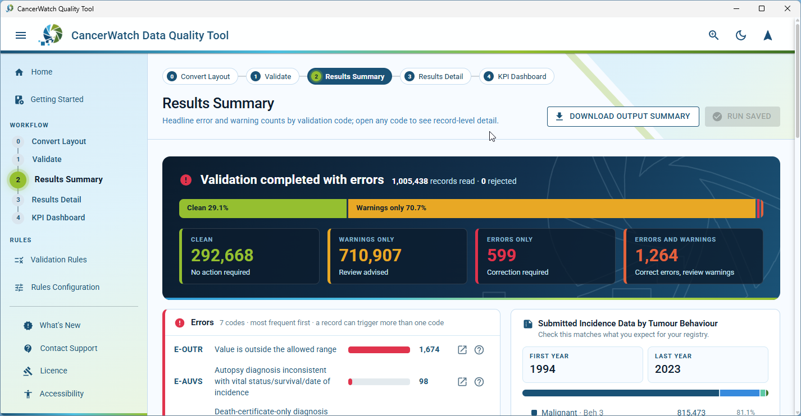
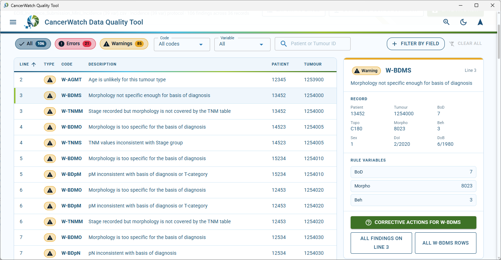
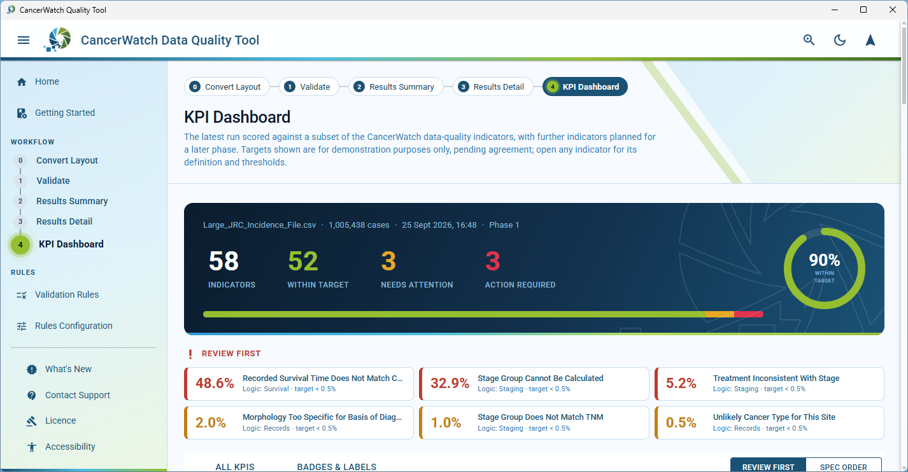
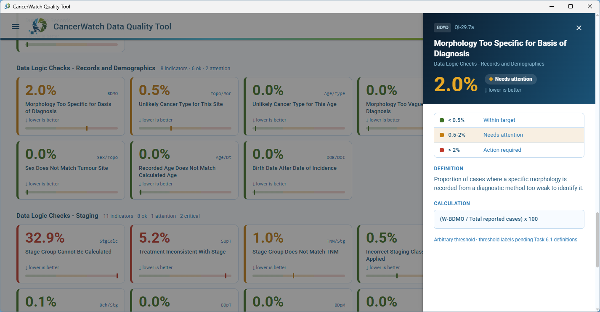

CancerWatch Quality Tool
Quality assurance for European cancer registry data
Validate registry submissions against the ENCR protocol rules before you send them to ECIS: errors, warnings and data-quality indicators in a single run, entirely on your own computer.
All releases and release notes on GitHub.
- Patient data never leaves your computer
- No internet connection required
- Free and open source, EUPL 1.2 licence
How it works
The tool walks a submission through five numbered steps, the same order as the stepper inside the app. Each screenshot below is the real page at that step.
Start from the home page
Every main page is one click away from the home screen, and the navigation drawer stays available on every page. A Getting Started guide inside the tool explains how to prepare a file.



Validate against ENCR protocols
Choose the protocol, drop in the file and run. Every current ECIS incidence and survival protocol is supported, with files up to 3 GB.

Read the results summary
A verdict for the whole file, how many records are clean, and a summary by error code with the most frequent first.

Fix the records that need it
A detail view down to the record and field, with corrective-action guidance for each code.

Check the data-quality indicators
A KPI dashboard with an overall quality score and drill-down on each indicator, showing how it is calculated and where the thresholds sit.


Built for everyone
- Light and dark themes
- Zoom to 200%
- Keyboard-only operation
- Screen reader support
- WCAG 2.1 AA
About CancerWatch
CancerWatch is a Joint Action supporting Europe's Beating Cancer Plan. Its primary goal is to improve the quality and timeliness of cancer registry data collected by the members of the European Network of Cancer Registries. By innovating registration processes and addressing data disparities, CancerWatch will make more accurate and comparable insights available through the European Cancer Information System (ECIS) and the new European Health Data Space.
The Quality Tool is intended for population-based cancer registries that submit data to ECIS. It is downloaded and run on the user's own computer, with no internet connection, to assess a data file before submission and to feed performance indicators back into the registry's overall data quality work.
System requirements
Hardware, all platforms
| Component | Minimum | Recommended |
|---|---|---|
| Processor | 64-bit x64, 2 cores | 4 or more cores. Validation runs in parallel across every core, so more cores make large files faster. |
| Memory | 4 GB | 8 GB or more. The app runs three processes plus a web view and holds up to 100,000 records in memory at a time; memory use does not grow with file size. |
| Disk, to install | About 250 MB | 1 GB |
| Disk, everyday use | Varies with the size of the registry data | At least 10 GB free. The largest file the app accepts, 3 GB, needs three times its size, 9 GB, free. |
| Display | 1280 x 720 | 1920 x 1080 |
| Network | None needed. Everything runs on the local machine; the app only talks to itself over localhost, so security software must allow that. | Internet access only if you use the automatic update checks. |
Accessibility statement
The National Cancer Registry Ireland (NCRI) is committed to making this website accessible, in accordance with the European Union (Accessibility of Websites and Mobile Applications of Public Sector Bodies) Regulations 2020. This statement applies to this download page. The CancerWatch Quality Tool itself carries its own statement, on its Accessibility page inside the application.
Compliance status
This website is fully compliant with the Web Content Accessibility Guidelines (WCAG) 2.1 Level AA. The download files and the release pages on GitHub are provided by GitHub and are outside the scope of this statement.
Non-accessible content
There is no known non-accessible content on this page.
Preparation of this statement
This statement was prepared on 13 October 2026. It is based on a review of the page using manual keyboard checks and automated checks of colour contrast and the accessibility tree.
Feedback and contact
If you find a barrier on this page, or need any of its content in another format, email cancerwatch@ncri.ie or write to the National Cancer Registry Ireland, Building 6800, Cork Airport Business Park, Kinsale Road, Cork, T12 CDF7, Ireland. We aim to respond within 15 business days.
Enforcement procedure
If you are not satisfied with our response, you can complain to the Office of the Ombudsman.